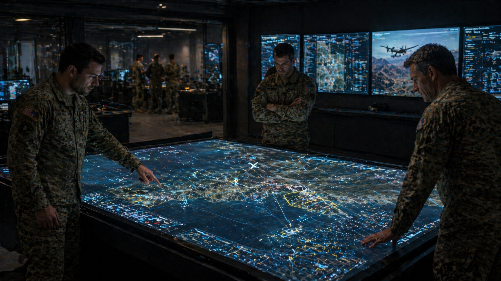

1. Purpose of Document
This document defines the mission rationale, system context, operational concept, external environment, and states/modes baseline for SPARTA. It establishes the operational truth against which system requirements (Deliverable 02), architecture (Deliverable 03), and verification (Deliverable 04) are derived and shall remain consistent.
2. Scope and Applicability
The scope covers system-level operational definition for SPARTA operating with tactical mobile nodes, the MARS mission system, one or more TSOCs, and relevant command authorities. It applies to PDR review activities where the operational concept is sufficiently mature to control architectural commitments and bound requirements, while specific platform integration parameters may remain provisional pending ICD freeze and representative threat analysis.
3. Referenced System Baseline and Context
| Item | Baseline |
|---|---|
| System name | SPARTA — Secure Platform Awareness, Resilience, Trust & Assessment |
| Purpose | Provide real-time, mission-aware cyber situational awareness and trust assessment for distributed mobile nodes, enabling MARS and C2 to maintain mission effectiveness under cyber threat. |
| Primary mission ecosystem | MARS mission system, TSOC(s), peer tactical nodes, C2 / mission command |
| Primary operators / users | Military mission operators, cyber operators/analysts, and autonomous or semi-autonomous tactical nodes |
| Primary deployment hosts | Airborne, ground-mobile, and maritime tactical nodes of heterogeneous compute class |
| Governing baseline decision | Edge-local detection with optional tactical correlation and authoritative TSOC/MARS integration |
| Controlling document | SPARTA System Analysis Baseline — see Index §3 |
4. Executive System Overview
SPARTA exists because distributed mission systems require trust decisions within a time frame faster than centralized cyber workflows can reliably provide, and with a richness of mission context that central cyber operators cannot always see. The system combines platform assurance evidence, communications behavior, mission-state consistency, and peer correlation to estimate node trust and publish recommendations that are operationally actionable by MARS and analytically useful to TSOC.
5. Mission Objectives, Drivers and Measures of Effectiveness
5.1 Mission Objectives
- Detect cyber compromise, deception, or mission-behavior anomalies affecting tactical nodes.
- Convert heterogeneous evidence into reliable node trust assessments with confidence and mission impact.
- Support mission continuity through bounded recommendations and policy-enabled protective actions.
- Preserve TSOC visibility and evidence continuity despite degraded tactical communications.
- Provide explainable, auditable outputs that are consumable by mission operators, analysts, and automation.
5.2 Operational / Business Drivers
- Sovereign, embedded cyber awareness in distributed crewed–uncrewed operations.
- Reduced decision latency between cyber event detection and mission adaptation.
- Operation under hybrid networking and intermittent reach-back.
- Discrimination between faults, authorized autonomy adaptation, and adversarial manipulation.
- Alignment with future joint/coalition cyber operations where trust is exchanged across organizations.
5.3 Measures of Effectiveness (MOE)
| MOE ID | Measure | Success Intent | Observable Evidence |
|---|---|---|---|
| MOE-01 | Mission trust awareness timeliness | MARS receives actionable trust output inside tactical decision windows. | Time from qualified anomaly to TrustAssessment on MARS bus. |
| MOE-02 | Operational relevance of outputs | Trust outputs discriminate between technical anomalies and mission-significant threats. | Proportion of outputs with non-null mission impact that are operator-confirmed as relevant. |
| MOE-03 | Mission continuity under degradation | Degraded and disconnected operations continue with bounded cyber visibility. | Mission-thread completion rate with TSOC unreachable. |
| MOE-04 | Analyst utility | TSOC receives sufficient evidence for adjudication and correlation when links permit. | Adjudication turnaround time and evidence completeness score. |
| MOE-05 | False-action containment | Mission-affecting protective recommendations remain explainable, reversible, and policy-controlled. | Audit rate of reversibility and post-mission review closure. |
| MOE-06 | Adversary-resilience | Adversarial influence on correlation channels does not dominate consensus. | Red-team influence tolerance in controlled exercises. |
6. Stakeholders and Roles
| Stakeholder | Role | Needs and Expectations | Key Interaction |
|---|---|---|---|
| Mission commander / C2 | Mission authority and prioritization | Concise trust constraints and mission-impact summaries, not raw cyber detail. | Receives trust impact summaries; authorizes policy envelopes. |
| MARS mission system | Mission orchestration and adaptation | Structured trust state, recommendations, and validity windows. | Bi-directional: mission context in, trust/advisory out. |
| TSOC cyber analyst | Cyber oversight, analytics, policy adjudication | Evidence, provenance, correlation inputs, and action override capability. | Bi-directional: evidence up, policy/adjudication down. |
| Platform operator / node host | Host platform stewardship | Low-overhead behavior, predictable interfaces, no unsafe interference. | Resource envelope, local health, integration. |
| System integrator | Architecture and verification integration | Stable decomposition, traceability, bounded assumptions. | Governs ICDs, accreditation evidence. |
| Accreditation authority | Certification of operational fitness | Predictable, bounded, auditable behavior and evidence. | Reviews policy contracts and authority envelopes. |
| Training & sustainment | Operator readiness and content evolution | Replayable mission threads and controllable content updates. | Consumes reason-chains and evidence for exercises. |
| Coalition partner (future) | Cross-organization trust exchange | Interoperable trust objects under classification rules. | Receives filtered trust summaries; controlled by policy. |
7. System of Interest, Boundary and External Dependencies
7.1 System of Interest
SPARTA comprises edge-local software components (data acquisition, detection, trust, response, policy, evidence), optional tactical correlator services, interface adapters, data persistence, and security/policy enforcement relevant to cyber awareness and trust estimation. The SoI is the software baseline, its data contracts, and its deployment envelope on the host platform.
7.2 Boundary and External Entities
7.3 External Dependencies
| Dependency | Type | Why it matters |
|---|---|---|
| MARS mission / state APIs & timing behavior | Functional | Gates mission-aware detection quality. |
| Secure tactical comms transport | Infrastructure | Carries peer summaries and TSOC exchanges. |
| TSOC policy, intelligence, and evidence endpoints | Operational | Supports adjudication and policy refresh. |
| Host telemetry & security-posture evidence | Functional | Provides the basis for local integrity assessment. |
| Identity / key management / crypto provisioning | Security | Underpins authenticity and provenance of all exchanges. |
| PNT / common time reference | Infrastructure | Enables event ordering and validity windows. |
8. Operational Environment, Constraints and Assumptions
8.1 Operational Environment
SPARTA operates across airborne and mobile tactical nodes in mission networks characterized by changing topology, asymmetric bandwidth (kbps to Mbps), intermittent links (availability typically 60–95% per leg), mixed security domains, heterogeneous compute classes (from SWaP-constrained embedded to fog-node servers), and potentially degraded navigation and timing. Nodes may shift between isolated, clustered, and reach-back conditions within a single mission thread.
dynamic · hybrid"] B["Bandwidth
asymmetric · prioritized"] C["Availability
intermittent"] D["Timing
±50 ms required"] E["Adversary
continuously present"] end Env -->|"drives"| Resilience["Resilience
& graceful degradation"] Env -->|"drives"| Compact["Compact
tactical exchanges"] Env -->|"drives"| Authority["Authority
separation"]
8.2 Constraints (operational)
- SPARTA shall not assume stable IP topology or continuous end-to-end connectivity.
- SPARTA shall not take mission-breaking actions outside pre-authorized policy envelopes.
- Bandwidth allocated to SPARTA is subordinate to mission traffic.
- Local analytics shall remain bounded by host-platform resource and safety constraints.
- Cross-domain exchanges shall comply with mission classification policy.
8.3 Assumptions
- MARS role/task context is accessible on each relevant node via IF-EXT-01.
- Each node maintains a local clock of sufficient quality (±50 ms) for event ordering.
- Node-to-node exchange of compact trust summaries is permissible under policy.
- Identity and keys are provisioned prior to mission execution.
If MARS context is sparse or latency-burdened, mission-aware anomaly detection must degrade to a narrower integrity/communications baseline and associated capability claims shall be re-scoped. If timing quality degrades below the assumed envelope, correlation shall switch to tolerant-ordering mode with explicit confidence reduction.
9. Stakeholder Interaction View

10. Use Cases and Mission Threads
| Use Case | Summary | Driving Need | Primary Actors | Trigger |
|---|---|---|---|---|
| UC-01 Nominal mission monitoring | Continuous assessment of node integrity and mission consistency during normal operation. | Persistent cyber visibility | SPARTA · MARS · TSOC | Mission active |
| UC-02 Local anomaly containment | Node detects local anomaly, stores evidence, updates trust, and publishes recommendation. | Low-latency local action | SPARTA Edge · MARS | Local anomaly qualified |
| UC-03 Tactical cross-node disagreement | Peer inconsistency in track, handoff, or trust observation triggers tactical fusion. | Distributed deception detection | SPARTA Edge · Correlator · Peers | Peer-disagreement threshold crossed |
| UC-04 Disconnected mission continuation | TSOC unreachable; node and neighborhood continue within bounded policy. | Resilience to link loss | SPARTA Edge · Peers | TSOC link loss > T_disc |
| UC-05 Reconstitution and reintegration | Suspect node evidence reviewed; trust is restored, constrained, or node remains isolated. | Recovery and lifecycle continuity | TSOC · SPARTA · MARS | Adjudication closure or timeout |
| UC-06 Policy / model refresh | TSOC issues a signed policy/model bundle; SPARTA validates, versions, and activates. | Operational content evolution | TSOC · SPARTA | Policy push or scheduled refresh |
| UC-07 Operator query / explanation | Operator or analyst requests the reason-chain for a specific trust output. | Explainability & trust-in-automation | Operator · SPARTA | On-demand |
| UC-08 Red-team exercise mode | SPARTA ingests exercise-injected events and surfaces them with exercise tags. | Training & validation | Exercise control · SPARTA | Exercise enable |
10.1 Operator-Facing 7-Phase Mission Thread (Eurodrone reference mission)
The mission thread is expressed in operator-facing terminology as seven sequential phases, spanning pre-flight through post-mission analysis. This view is intended to be read alongside the SPARTA state machine in §12; the reconciliation table in §10.2 maps each operator phase to the underlying SPARTA mode(s) and data objects.
![Seven-phase Eurodrone mission thread rendered as a 3D isometric diorama: the blue-shaded permissive ground environment on the left hosts the Mission Control Centre (MCC) and runway (Phase 1 Mission Preparation), the Eurodrone departs into permissive airspace (Phase 2 Connected Mission), approaches the contested red zone (Phase 3 Link Loss), operates autonomously in denied airspace with cyber threats (Phase 4 Disconnected Mission), returns with restored link (Phase 5 Link Recovery), completes high-bandwidth verification (Phase 6 Return), and lands for forensic analysis and fleet learning (Phase 7 Post-Mission Analysis).](assets/mission_thread_diorama.png)
10.2 Phase-to-Mode Reconciliation
The seven operator-facing phases are a higher-abstraction narrative of the nine SPARTA modes defined in §12. The following table binds each phase to its primary SPARTA mode, governing use case(s), and canonical data objects produced or consumed.
| Phase | Operator label | SPARTA primary mode(s) | Driving use case(s) | Data objects produced / consumed |
|---|---|---|---|---|
| 1 | Mission Preparation | Standby → Initialize | UC-06 Policy / model refresh; commissioning | PolicyBundle v(n+1); HealthReport; NodeStatus (initial) |
| 2 | Connected Mission | Monitor → Correlate (Mode B / C) | UC-01 Nominal monitoring | Streaming NodeStatus, AnomalyEvent, TrustAssessment |
| 3 | Link Loss | Monitor → Degraded (transition) | New scenario — anticipatory posture change (§11.7) | Degraded-provenance flag on outputs; validity windows tightened |
| 4 | Disconnected Mission | Degraded → Assess → Recommend (Mode A only) | UC-04 Disconnected continuation | Locally-buffered EvidencePackage; degraded-provenance TrustAssessment |
| 5 | Link Recovery | Monitor → Recover | UC-05 Reintegration; re-sync | Priority-queued backhaul of staged EvidencePackage; resumed TSOC adjudication |
| 6 | Return | Monitor → Recover | UC-05 bounded trust restoration | Validated NodeStatus; closed-out ResponseRecommendations |
| 7 | Post-Mission Analysis | (offline; Standby) | Deliv. 04 §9 Operations Support; SYS-RAM-002 | Forensic EvidencePackage; updated models and PolicyBundles → feedback to Phase 1 for next sortie |
The 7-phase operator thread (Figure 01-6) and the 9-mode state machine (§12) are coherent views of the same baseline. The operator thread is the narrative used in briefings, exercises, and operator training. The 9-mode state machine is the internal specification used for requirements allocation and verification. Any apparent gap between them (e.g. anticipatory posture change at Phase 3) shall be closed by enriching the state machine, not by forking the narrative.
10.3 Multi-Node Mode-B Companion Thread
The 7-phase thread above is the single-platform view. SPARTA's tactical-correlation differentiator is expressed at the multi-node neighborhood level. The figure below overlays two Eurodrones operating in Mode B, exchanging PeerSummary objects and participating in tactical consensus.
11. Degraded, Contingency and Recovery Scenarios
11.1 Degraded Connectivity (UC-04)
When TSOC connectivity is lost, edge-local assessment and tactical fusion continue. Policy updates are frozen to the last-valid, signed state and flagged with validity age. Evidence is buffered locally in the EvidenceStore. MARS still receives trust outputs, but with a degraded-provenance annotation indicating reduced external adjudication availability.
11.2 Suspect Node in Formation (UC-03)
When one node exhibits implausible track handoffs, inconsistent peer trust, or local integrity anomalies, SPARTA downgrades trust, marks mission impact, recommends role restrictions to MARS, and requests corroboration from peers. The downgrade is explainable by a reason-chain and carries a validity window; MARS retains execution authority.
11.3 Recovery and Reintegration (UC-05)
When evidence or TSOC adjudication clears a suspect node, trust state is not restored instantaneously. Recovery proceeds through bounded intermediate states (Isolated → Suspect → Degraded → Trusted) with expiry windows, additional scrutiny, and synchronized event closure. Partial reintegration is preferred over binary trust restoration.
11.4 Policy Bundle Integrity Failure
If a received policy bundle fails signature or schema validation, SPARTA rejects it, maintains the prior valid bundle, raises an alert, and logs the rejection with provenance. Operations continue under the last-known-good content.
11.5 Timing Reference Degradation
If the common time reference degrades beyond the assumed envelope, SPARTA enters tolerant-ordering mode, shortens validity windows, and flags affected outputs with reduced confidence.
11.6 Host Resource Pressure
If host resource pressure exceeds the allocated SPARTA envelope, SPARTA performs graceful internal degradation: high-priority detectors remain active, lower-priority correlators shed load, and the degraded state is reported to MARS/TSOC for visibility.
11.7 Anticipatory Posture Change (Pre-Degraded)
When the host platform transitions toward a contested environment (Phase 3 in §10.1), SPARTA enters an anticipatory Pre-Degraded posture: validity windows are shortened, peer exchange cadence is increased, and the last-valid PolicyBundle is pinned locally. This posture change is driven by MARS-reported mission state (e.g. "entering denied airspace") or by observed comms-quality trends, and it occurs before link loss is fully qualified. The posture is reversible and non-mission-affecting; it prepares the node for Phase 4 Disconnected Mission without waiting for Degraded-mode entry. This scenario was imported from the operator-facing mission thread (Figure 01-6) during the Images.pptx reconciliation exercise.
12. States and Modes
| Mode | Description | Key Outputs | Active Elements |
|---|---|---|---|
| Standby | Installed, not mission-active | Health self-check only | Minimal services |
| Initialize | Loading policies, bindings, mission context | Configuration status | Policy Manager, Comms Adapter |
| Monitor | Nominal continuous sensing and assessment | NodeStatus, anomaly candidates | Data Acquisition, Detection, Trust |
| Correlate | Peer summary exchange and tactical fusion active | Consensus/disagreement products | + Correlator |
| Assess | Trust logic evaluating evidence | TrustAssessment with rationale | Trust Engine |
| Recommend | Recommendation and evidence publication | ResponseRecommendation, evidence package | Response Engine, Evidence Store |
| Degraded | Missing links, source loss, or reduced function | Reduced-confidence outputs | Core + flags |
| Isolate | Policy-gated local protective posture | Restricted local participation | Policy Engine, Response |
| Recover | Re-entry and validation after mitigation or adjudication | Stepwise trust restoration | Trust, Policy, Comms |
| Safe | Fault-driven fail-safe | Safe-state heartbeat only | Watchdog + minimal output |
13. Human vs Automation Responsibilities
| Decision Area | SPARTA (Automation) | MARS | TSOC | C2 / Commander |
|---|---|---|---|---|
| Local anomaly detection | Primary | Consumes | Reviews | — |
| Trust estimation | Primary | Applies constraints | May adjudicate | Sees impact |
| Mission adaptation | Advisory only | Primary execution authority | Policy / override | Strategic authority |
| Fleet-wide correlation | Provides inputs | Consumes conclusions | Primary | Oversight |
| Strong isolation actions | Only when policy-enabled and time-bounded | May coordinate | Approves / constrains | May direct |
| Policy / model content updates | Validates & activates signed bundles | — | Primary | Sets envelope |
| Reintegration decisions | Executes stepwise logic | Applies role change | Adjudicates | — |
14. Operational Timelines and Event Chains
15. Operational Risks, Sensitivities and Architecture-Driving Implications
- False positives can create mission-denial behavior operationally equivalent to an adversary success.
- Insufficient context can lead to technically correct but mission-irrelevant alerts.
- Adversarial influence on correlation channels can distort consensus unless provenance and weighting are enforced.
- Policy ambiguity at the SPARTA/MARS/TSOC boundary can stall accreditation and operational adoption.
- Timing reference loss can produce out-of-order evidence that degrades trust credibility.
15.1 Architecture-Driving Operational Implications
- Mission-aware checks require explicit interface allocation to MARS for role, task, and state context (drives IF-EXT-01).
- Disconnected operation requires local evidence buffering, durable trust state, and policy validity management (drives EvidenceStore and PolicyManager).
- Peer correlation requires compact, signed, provenance-bearing summaries rather than raw telemetry exchange (drives PeerSummary contract).
- Recovery scenarios require stateful reintegration logic rather than binary trust restoration (drives Trust Engine state machine).
- Resource envelopes must be contractual rather than best-effort (drives host-resource contract with platform integrator).
- Content evolution must be decoupled from the accredited software baseline (drives signed PolicyBundle / model package lifecycle).
15.2 Outputs into Deliverable 02
These operational drivers are converted into enforceable system requirements in Deliverable 02 — System Requirements Specification, and allocated in Deliverable 03 — Architecture & Data Definition.